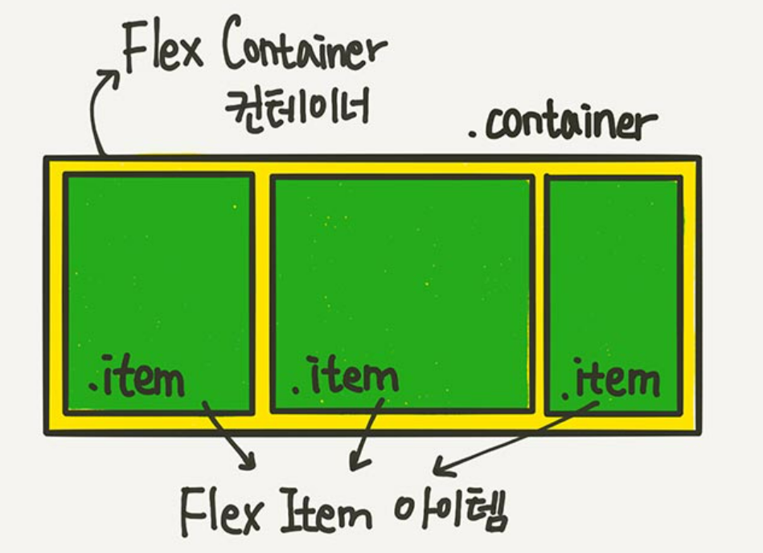
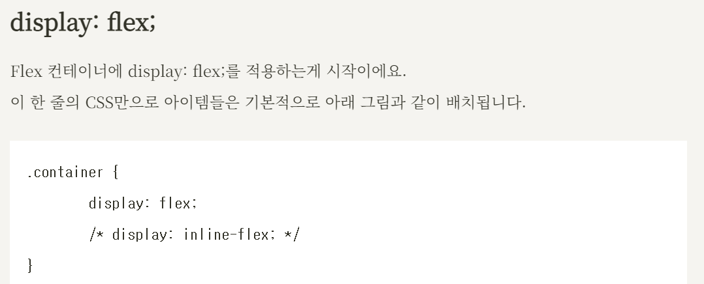
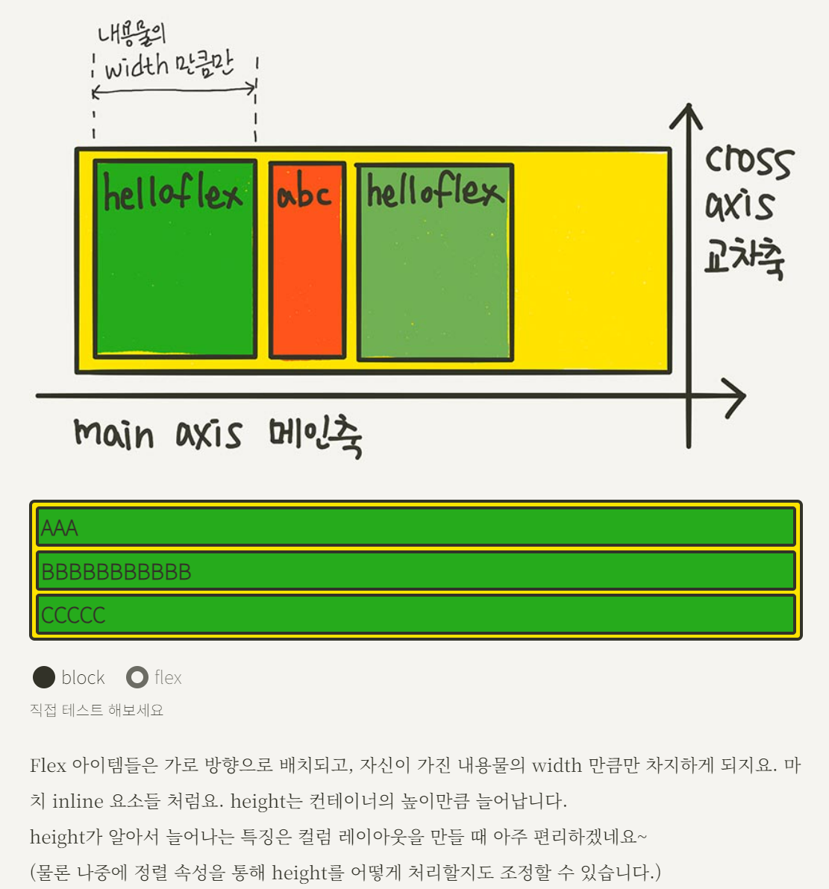
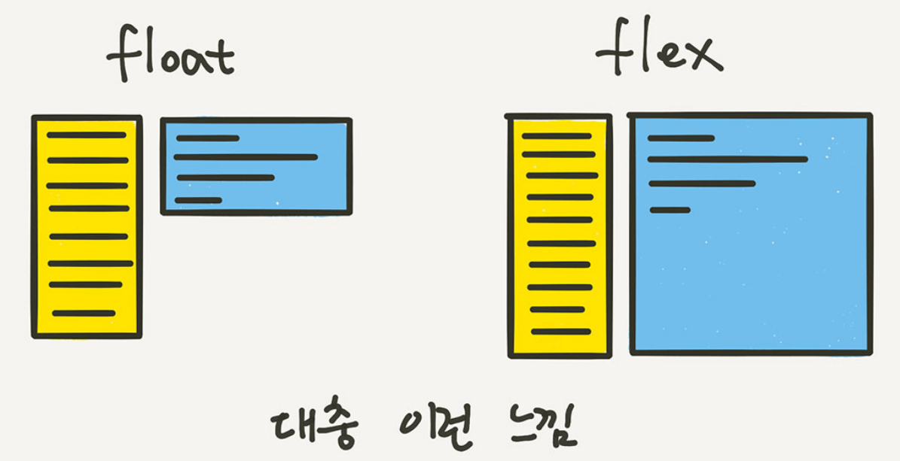
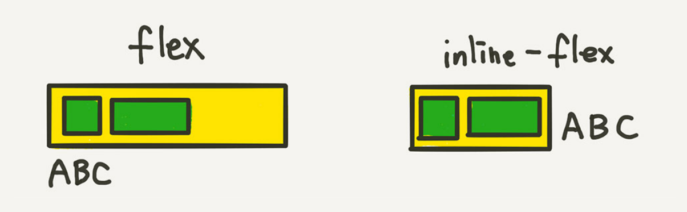
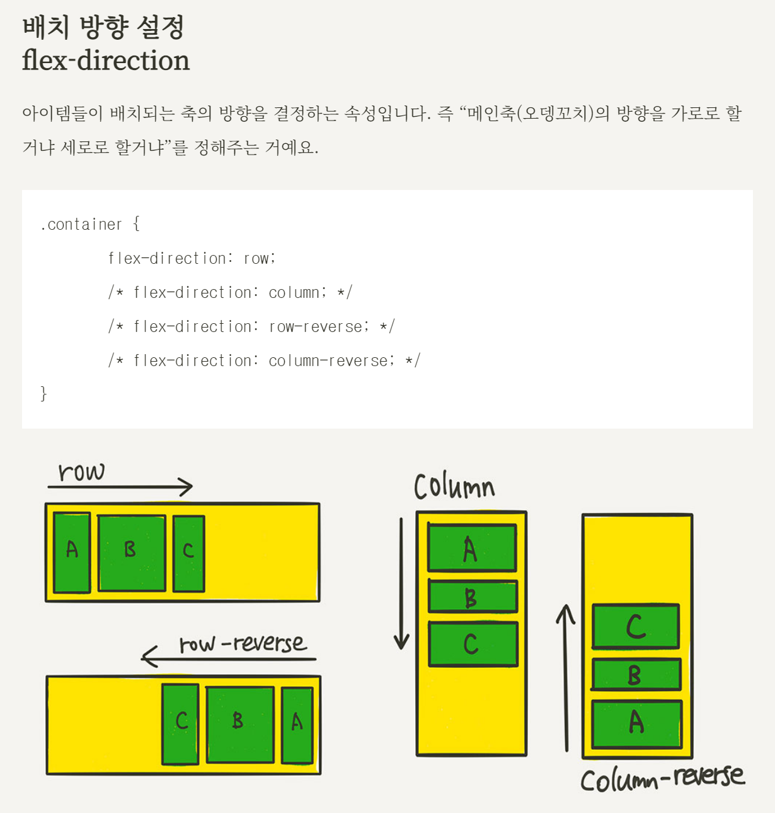
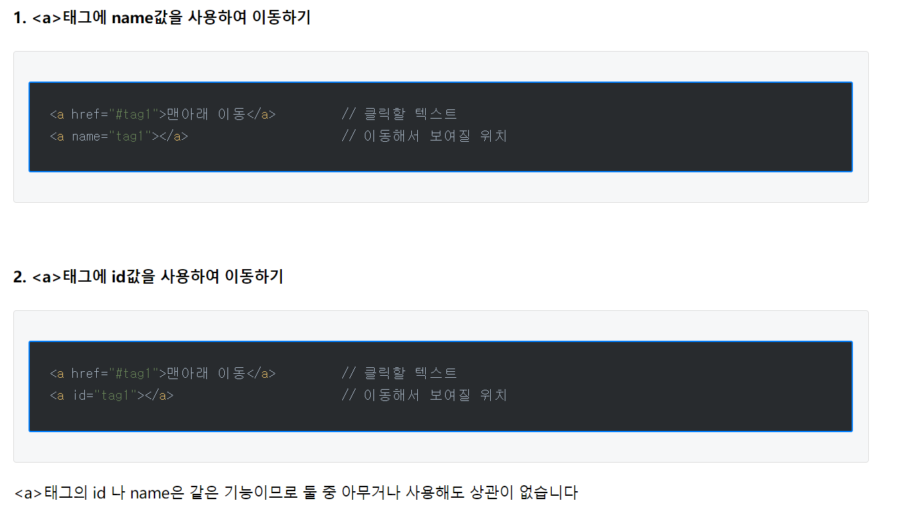

inline - 가로 배치가 가능하다 But width와 height 속성을 설정 해주어도 무시된다
해당 태그는 컨텐츠의 크기만큼을 공간을 차지하도록 지정되어있기 때문
margin과 패딩의 경우에도 좌우 간격만 반영되고 상하 간격은 반영되지 않는다
block - 세로 배치 할때 사용
매번 줄바꿈이 된다는 단점이 있음
inline과 다르게 모두 다 반영됨
inline-block - 하이브리드 모드다
줄바꿈 없이 나란히 배치가 되고
모두 다 반영된다는 장점이 있다
float 속성이란 - 요소의 배치를 제어할때 사용하는 속성
문제점 : 모든 자식요소에 float 속성을 적용하면 , 부모는 해당 자식이 존재 하지 않는 것ㅇ로 판단해
부모가 높이를 인식하지 못하는 문제가 발생
float을 사용하면 브라우저가 높이를 인지하지 못하게 되는 상황 발생 위의 이유 때문이다
해결법 : 부모에 heigth 적용 / 부모에 overflow:hidden 적용 / 부모에 float 적용 등등이
있으며 더 다양한 해결법은 링크하지만
그냥 flex쓰자
overflow 프로퍼티는 요소내의 컨텐츠가 너무 커서 요소내에 모두 보여주기 힘들때 그것을 어떻게 보여줄지를 지정
overflow 에 사용할 수 있는 값은 네가지가 있습니다.
- visible : 기본 값입니다. 넘칠 경우 컨텐츠가 상자 밖으로 보여집니다.
- hidden : 넘치는 부분은 잘려서 보여지지 않습니다.
- scroll : 스크롤바가 추가되어 스크롤할 수 있습니다.(가로, 세로 모두 추가 됩니다.)
- auto : 컨텐츠 량에 따라 스크롤바를 추가할지 자동으로 결정됩니다.( 필요에 따라 가로, 세로 별도로 추가될 수도 있습니다.)
float된 요소들의 부모태그에도 float 속성을 적용한다.
float이 적용되면서 inline-block 아이템이 되고, 다음요소가 옆으로 배치된다.
해당 박스요소를 중앙이나 원하는 위치로 배치하기 어려워지고, 다음에 오는 요소 또한 원하는대로 배치되지 않을 가능성이 높다.
부모 요소인 div.container를 Flex Container(플렉스 컨테이너)라고 부르고,
자식 요소인 div.item들을 Flex Item(플렉스 아이템)이라고 부릅니다.
“컨테이너가 Flex의 영향을 받는 전체 공간이고, 설정된 속성에 따라 각각의 아이템들이 어떤 형태로 배치되는 것”이라고 생각하시면 됩니다.



Flex 아이템들은 가로 방향으로 배치되고,
자신이 가진 내용물의 width 만큼만 차지하게 되지요.
마치 inline 요소들 처럼요. height는 컨테이너의 높이만큼 늘어납니다.

inline-flex flex 차이


-참고-
flex-flow
flex-direction과 flex-wrap을 한꺼번에 지정할 수 있는 단축 속성이에요.
flex-direction, flex-wrap의 순으로 한 칸 떼고 써주시면 됩니다.
.container {
flex-flow: row wrap;
/* 아래의 두 줄을 줄여 쓴 것 */
/* flex-direction: row; */
/* flex-wrap: wrap; */
}
자, 이제 “정렬”을 할건데요. 시작하기 전에 기억해 두실게 있어요.
이건 나중에 Grid까지 이어지니까 지금 알아 두세요~
“justify”는 메인축(오뎅꼬치) 방향으로 정렬
“align”은 수직축(오뎅을 뜯어내는) 방향으로 정렬
